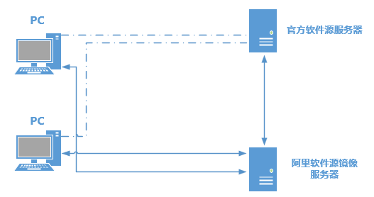

[Linux基础]-5-软件的安装与管理
引言
这篇文章介绍Linux五个运用最普遍的软件包管理器。使用Rocky（RHEL系）、Ubuntu（Debian系）、EndeavourOS（Arch系）这三个不同的Linux发行版，分别介绍rpm、yum、dnf、dpkg、apt-get和pacman的使用方法。
- 0×1.RPM、DPKG、Pacman软件管理机制浅析
- 0×1.1.Linux如何更换软件源
- 0×2.使用rpm命令安装卸载软件
- 0×3.使用yum安装卸载软件
- 0×4.使用dnf安装卸载软件
- 0×5.使用dpkg命令安装卸载软件
- 0×6.使用apt-get安装卸载软件
- 0×7.使用pacman安装卸载软件
0×1.RPM、DPKG、Pacman软件管理机制浅析
RPM(Red hat Package Manage)：是Red Hat公司开发的打包标准，通常以.rpm作为后缀，Linux软件包的命名有一定的规律,一般的结构是"软件名称-版本-适合的系统平台.扩展名"，例如，一个rpm安装包名称是"ansible-test-2.14.9-1.el9.x86_64.rpm"，那么这个软件的名称就是"ansible-test"，软件版本是"2.14.9-1.el9"，适用的平台"x86_64"（x86_64构架）；RPM包可以安装在所有的RHEL系Linux中，例如，Rocky，Fedora等。
DPKG(Debian Package)：dpkg是Debian系发行版负责管理软件包的初级工具，只有简单的安装、卸载、检查依赖等本地的功能；dpkg封装的包后缀是.deb，例如“sogoupinyin_4.2.1.145_amd64.deb”，“sogoupinyin”是软件的名称，“4.2.1.145”是版本号，“amd64”是这个包的适用平台；deb包可以安装在所有Debian系列系统上，例如，Ubuntu，Kali，Deepin等。
Pacman：是Arch系列操作系统上的默认包管理器，功能强大能，不仅能够通过软件仓库在线安装，还能够安装本地打包好的软件，在ArchLinux中，本地打包软件的后缀通常是.pkg.tar.zst，例如：“vmware-workstation-17.5.0-2-x86_64.pkg.tar.zst”；
然而，不论哪种软件管理机制封装的安装包，都存在相关软件的依存问题，比如使用rpm或者dpkg安装软件A，A则需要系统中已经安装好软件B和C，否则A将不能正常安装，这就带来一个非常麻烦的问题，如果A依赖的程序不止两个，而是几百个，这几百个被依赖的程序在安装的过程中，又存在其他的依赖关系，那么手动安装这些依存程序显然就会非常的麻烦。
所以，为了解决安装软件的依赖关系问题，Yum、Dnf、Apt-get、Pacman这几种自动解决依赖关系的包管理器就被开发了出来。Yum和Dnf是RPM软件管理机制的在线安装方式，适用于RHEL系列Linux；Apt-get是DPKG软件管理机制的在线安装方式，适用于Debian系列Linux；Pacman是Arch系列Linux的原生包管理器；它们都可以自动解决软件的依存问题，当某个需要安装的软件存在依赖软件时，安装程序会自动搜索指定的网络服务器中是否存在这些依存的软件，如果存在，会将这些软件一次性全部安装好。
0×1.1.Linux如何更换软件源
首先来看一下，为什么要更换软件源，因为大多数的Linux的软件仓库都在国外的服务器上，在网络不通达的时候，就可能访问不了，这就会导致我们更新系统或在线安装软件失败；如果遇到了这样的问题，解决它的最好办法就是将软件源更换到国内【阿里云开源镜像站】；
上图中， 假设PC连接官方软件源服务器网络不好，那么就可以通过阿里这样的镜像站，因为阿里的网络到官方软件源服务器的网络是通的，所以阿里会缓存所有官方软件源里面的资源到镜像服务器上，这样我们只需要通过阿里镜像服务器去获取软件和更新就行了。
更换软件源的方法，打开【阿里云开源镜像站】，找到自己的Linux操作系统对应的镜像，然后参考步骤就行修改。
===在没有学习权限之前，下面所有对软件源文件的修改，都暂时使用超级管理员root运行===
● Ubuntu修改软件源文件示例：
#sed -i.hk987参数接受传入一个文件，sed首先会将这个文件复制一份并且添加.hk987后缀
#然后再将 --- {'s|这一部分的内容|替换成这一部分|g'}，在命令中使用|作为分隔符的时候斜杠/不需要用反斜杠\转义
sed -e 's|http://cn.archive.ubuntu.com|http://mirrors.aliyun.com|g' -i.hk987 /etc/apt/sources.list
● Rocky修改软件源文件示例：
#查看系统版本命令（或lsb_release -a）
more /etc/os-release
#针对Rocky8
sed -e 's|^mirrorlist=|#mirrorlist=|g' \
's|^#baseurl=http://dl.rockylinux.org/$contentdir|baseurl=https://mirrors.aliyun.com/rockylinux|g' \
-i.hk987 \
/etc/yum.repos.d/Rocky-AppStream.repo \
/etc/yum.repos.d/Rocky-BaseOS.repo \
/etc/yum.repos.d/Rocky-Extras.repo \
/etc/yum.repos.d/Rocky-PowerTools.repo
#针对Rocky9
sed -e 's|^mirrorlist=|#mirrorlist=|g' \
's|^#baseurl=http://dl.rockylinux.org/$contentdir|baseurl=https://mirrors.aliyun.com/rockylinux|g' \
-i.hk987 \
/etc/yum.repos.d/rocky-extras.repo \
/etc/yum.repos.d/rocky-addons.repo \
/etc/yum.repos.d/rocky-devel.repo \
/etc/yum.repos.d/rocky.repo
以上命令只替换了默认启用的仓库。替换之后请运行 dnf makecache 更新缓存。
● Archlinux修改软件源文件示例：
#针对Archlinux
sed -e 's|^|#|g' -e '1i Server = http://mirrors.aliyun.com/archlinux/$repo/os/$arch' -i.hk987 /etc/pacman.d/mirrorlist
0×2.使用rpm命令安装卸载软件
● 查询软件安装到系统的哪些目录中：
#对已安装的软件，通过软件名查询安装到了系统哪些目录中
rpm -ql openssh-server
#查询rpm软件包，包含哪些文件
rpm -qlp openssh-server-8.7p1-34.el9.x86_64.rpm
● 查询软件安装需要哪些依赖软件包：
#对已安装的软件
rpm -qR openssh-server
#对软件包
rpm -qRp openssh-server-8.7p1-34.el9.x86_64.rpm
● 查询某个文件属于哪个软件包：
#查询sshd_config这个配置文件属于哪个软件包
rpm -qf /etc/ssh/sshd_config
openssh-server-8.7p1-34.el9.x86_64
● 安装和卸载rpm软件包：
#安装ssh服务端
rpm -ivh openssh-server-8.7p1-34.el9.x86_64.rpm
#卸载ssh客户端，通过rpm卸载软件的时候，能不能卸载的前提条件是被卸载的软件不被其它软件包依赖
rpm -evh openssh-server
0×3.使用yum安装卸载软件
在我们使用rpm安装软件的包的时候，会出现大量的软件依存关系问题，手动解决十分麻烦，所以yum包管理器被开发出来，用来自动解决软件之间的依存关系，yum默认使用联网安装的方式，从指定的服务器中搜索我们需要安装的软件，如果有依存关系的软件，也会被一并自动安装。
● yum查找在线仓库中是否存在某软件包：
#使用search参数查找仓库中是否存在vim程序的安装包
yum search vim
===== 名称 和 概况 匹配：vim =====
vim-X11.x86_64 : The VIM version of the vi editor for the X Window System - GVim
vim-common.x86_64 : The common files needed by any version of the VIM editor
vim-enhanced.x86_64 : A version of the VIM editor which includes recent : enhancements
vim-filesystem.noarch : VIM filesystem layout
vim-minimal.x86_64 : A minimal version of the VIM editor
● yum查询某个软件包详细信息：
#使用list或者info参数查找系统中是否已经安装了vim
yum list vim
#如果vim已经安装，显示详细信息
yum info vim
● yum安装软件：
#安装vim
yum install vim
#添加-y参数，不用手动输入yes，自动安装
yum install vim -y
● yum更新软件：
#单独更新vim软件到最新版本，并且保留旧版本安装包
yum update vim
#单独更新vim软件到最新版本，并且删除旧版本安装包
yum upgrade vim
#更新系统中所有已安装的软件包到最新版本，并且保留旧版本安装包
yum update
#更新系统中所有已安装的软件包到最新版本，并且删除旧版本安装包
yum upgrade
注意：yum update和yum upgrade的功能都是一样的，都是将需要更新的package更新到源中的最新版。唯一不同的是，yum upgrade会删除旧版本的package，而yum update则会保留旧版本的package(obsoletes=0)。所以，生产环境中建议使用yum update，防止因为替换，导致旧的软件包依赖出现问题。
● yum从系统中删除软件：
#从系统中删除vim软件
yum remove vim
● yum从系统中清除下载的软件包缓存：
#从系统中删除所有缓存，在最新版本的Rocky系统中，yum已经被dnf取代，缓存目录通常位于 /var/cache/dnf/
yum clean all
0×4.使用dnf安装卸载软件
dnf命令来自英文词组“Dandified YUM”的缩写，是新一代的软件包管理器，dnf开发的初衷是作为yum包管理器的替代版本，其功能是用于安装、更新、卸载Linux系统中的软件。 最初应用于Fedora 18系统中，目标非常明确的想要解决掉yum命令的诸多瓶颈问题，例如占用大量内存、臃肿的软件依赖关系、运行速度缓慢等等诟病。
dnf命令的参数和用法与yum完全一样，只需要将命令中的yum替换成dnf即可，请看下面的演示：
● dnf查找在线仓库中是否存在某软件包：
#使用search参数查找仓库中是否存在vim程序的安装包
dnf search vim
===== 名称 和 概况 匹配：vim =====
vim-X11.x86_64 : The VIM version of the vi editor for the X Window System - GVim
vim-common.x86_64 : The common files needed by any version of the VIM editor
vim-enhanced.x86_64 : A version of the VIM editor which includes recent : enhancements
vim-filesystem.noarch : VIM filesystem layout
vim-minimal.x86_64 : A minimal version of the VIM editor
● dnf查询某个软件包详细信息：
#使用list或者info参数查找系统中是否已经安装了vim
dnf list vim
#如果vim已经安装，显示详细信息
dnf info vim
● dnf安装软件：
#安装vim
dnf install vim
#添加-y参数，不用手动输入yes，自动安装
dnf install vim -y
● dnf更新软件：
#单独更新vim软件到最新版本，并且保留旧版本安装包
dnf update vim
#单独更新vim软件到最新版本，并且删除旧版本安装包
dnf upgrade vim
#更新系统中所有已安装的软件包到最新版本，并且保留旧版本安装包
dnf update
#更新系统中所有已安装的软件包到最新版本，并且删除旧版本安装包
dnf upgrade
注意：dnf update和dnf upgrade的功能都是一样的，都是将需要更新的package更新到源中的最新版。唯一不同的是，dnf upgrade会删除旧版本的package，而dnf update则会保留旧版本的package(obsoletes=0)。所以，生产环境中建议使用dnf update，防止因为替换，导致旧的软件包依赖出现问题。
● dnf从系统中删除软件：
#从系统中删除vim软件
dnf remove vim
● dnf从系统中清除下载的软件包缓存：
#从系统中删除所有缓存，dnf 的缓存目录通常位于 /var/cache/dnf/
dnf clean all
0×5.使用dpkg命令安装卸载软件
dpkg是Debian系列linux的默认包管理器，在Debian系列linux中，所有封装好的安装包都是以.deb后缀结尾，例如搜狗拼音输入法：sogoupinyin_4.2.1.145_amd64.deb，下面是dpkg包管理器的命令实例。
● dpkg查询已安装好的软件的版本信息：
#通过dpkg的-l参数查询已经安装好的vim软件的版本信息
dpkg -l vim
● dpkg查询已安装好的软件在系统中的位置：
#通过dpkg的-L参数查询vim软件包释放到系统的哪些位置
dpkg -L vim
● dpkg查询已经安装的软件包详情：
#通过dpkg的-s参数查询vim软件包详情
dpkg -s vim
● dpkg列出deb安装包中的内容：
#通过dpkg的-c参数列出搜狗拼音输入法deb包的内容（包含的文件以及路径）
dpkg -c sogoupinyin_4.2.1.145_amd64.deb
● dpkg安装deb软件包：
#通过dpkg的-i参数安装搜狗拼音输入法软件包（安装不会成功，因为会遇到依赖软件没有安装的问题）
dpkg -i sogoupinyin_4.2.1.145_amd64.deb
在上面这个实例中，安装会失败，因为搜狗输入法安装包需要先安装fcitx等输入法框架，这也是dpkg安装方法的一个弊端，无法自己识别和安装有依存关系的软件包。
● dpkg移除已经安装的软件包：
#通过dpkg的-r参数，可以移除指定的软件，但是会保留软件包的配置文件
dpkg -r vim
#通过dpkg的-P参数（大写P），可以移除指定的软件，并且同时删除软件的配置文件
dpkg -P vim
对于Debian系列Linux系统，推荐使用apt方式在线安装和卸载软件，请看下一小节的实例演示。
0×6.使用apt-get安装卸载软件
APT（英语：Advanced Packaging Tools）是高级包装工具的意思，它是Debian及其衍生发行版（如：ubuntu）的自动化软件包管理器。可以自动下载，配置，安装二进制或者源代码格式的软件包，并且自动解决软件包之间的依赖问题。
● 使用apt更新系统中所有已安装的软件包到最新版：
#不同于RHEL系列，apt update仅用来从服务器获取最新的软件列表以及对应软件的版本号
#apt upgrade才会根据最新的软件列表更新系统中已经安装的软件
#所以这两条命令通常都是组合使用
apt update && apt upgrade
● 使用apt安装软件：
#使用apt的install参数安装vim
apt install vim
● 使用apt解决安装依赖问题：
#有时候使用dpkg安装软件，会出现一大堆没有安装的依赖包，这个时候就能使用apt的-f参数（--fix-broken）来自动安装依赖软件包
apt install -f
● 使用apt卸载已经安装的软件：
#使用apt的remove参数卸载已经安装的vim软件包
apt remove vim
● 使用apt查看安装包的依赖关系列表：
#使用apt的rdepends（Reverse Depends）参数，查看vim的软件依赖关系列表
apt rdepends vim
● 使用apt清理缓存释放/空间：
#Ubuntu下载的软件包被缓存在“/var/cache/apt/archives/”
#自动删除不需要的软件包（不被使用和不被任何软件依赖）
apt autoremove
#删除过期的缓存文件，apt autoclean 命令会删除 /var/cache/apt/archives/ 目录中已经不再需要的包文件。具体来说，它会删除系统中已经没有可用版本的旧包文件，而保留当前最新版本的包文件。这种方式可以在释放空间的同时，保留当前版本的包文件，以便在需要时重新安装。
apt autoclean
#删除所有的软件包缓存，apt clean 命令会删除 /var/cache/apt/archives/ 目录中的所有 .deb 文件。
apt clean
0×7.使用pacman安装卸载软件
Pacman是Arch系列Linux的包管理器，同样可以在线安装软件，请看下面的实例。
● 使用pacman更新整个系统：
#ArchLinux是一款滚动更新的操作系统，所以只需要下面这一条命令，就能将系统更新到最新版（这条命令不会更新内核）
pacman -Syyu
● 使用pacman安装软件：
#使用pacman的-S参数，安装vim
pacman -S vim
#使用pacman的-U参数，能够安装本地软件包，在Arch中，软件包的扩展名为pkg.tar.zst
pacman -U hk987.1.8.0-1-any.pkg.tar.zst
● 使用pacman卸载软件：
#使用pacman的-R参数，卸载vim
pacman -R vim
● 使用pacman查询软件信息：
#使用pacman的-Ss参数，搜索包含关键字openssh的包
pacman -Ss openssh
#使用pacman的-Qi参数，搜索openssh包的详细信息
pacman -Qi openssh
#使用pacman的-Ql参数，查看openssh包安装后会释放到系统哪些目录
pacman -Ql openssh
● 使用pacman清除软件包缓存：
#所有使用pacman安装过的软件包都会被缓存到/var/cache/pacman/pkg/目录下
#系统这样做的好处是当我们删除某个软件之后再安装，系统会先去缓存目录寻找这个软件的安装包
#如果有缓存，并且版本和服务器的最新版一样，那么就直接从缓存目录安装，这样也会导致这个目录越来越大
#可以通过下面的命令清空软件包缓存目录
pacman -Scc
#下面的命令只会将软件包下载到缓存目录/var/cache/pacman/pkg/，不会安装
pacman -Sw vim